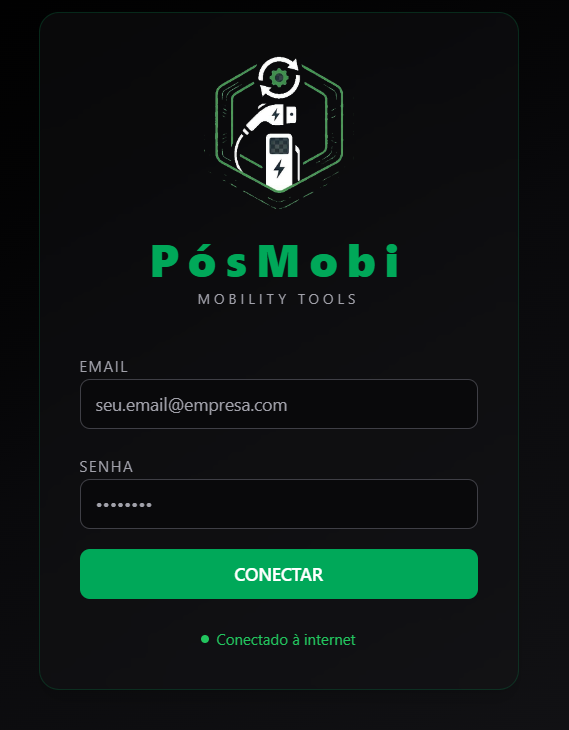
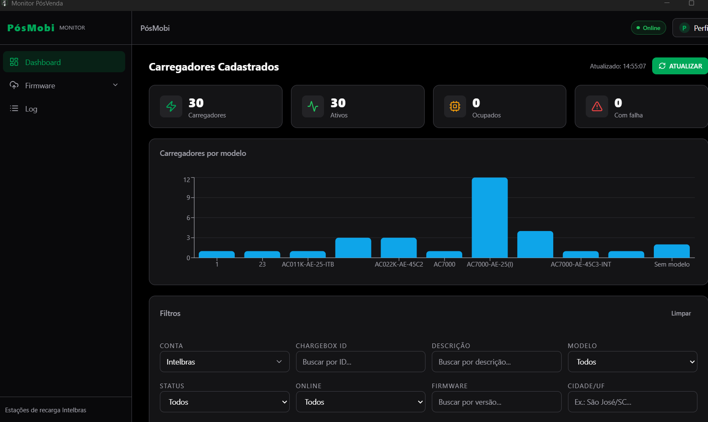
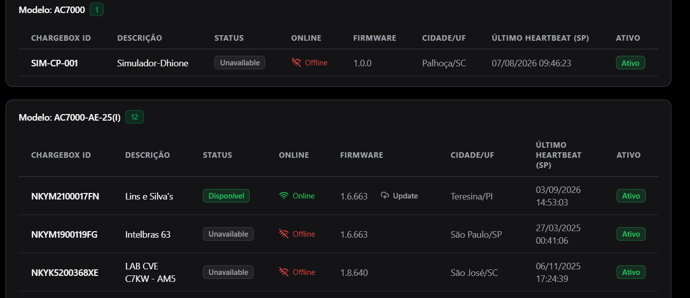
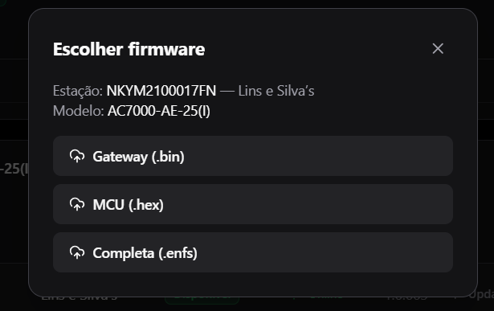
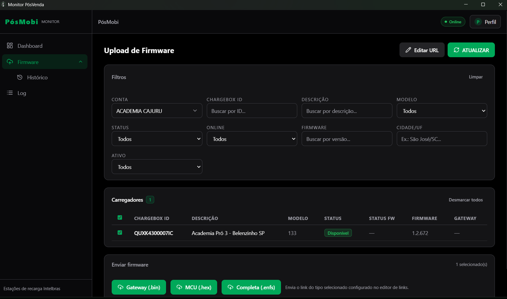
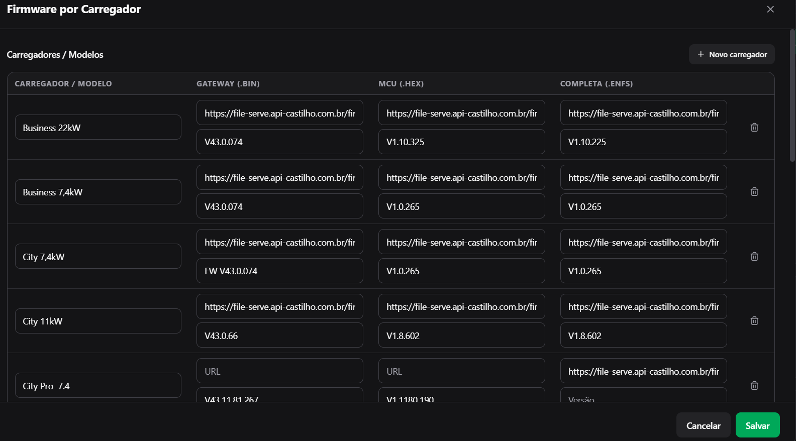
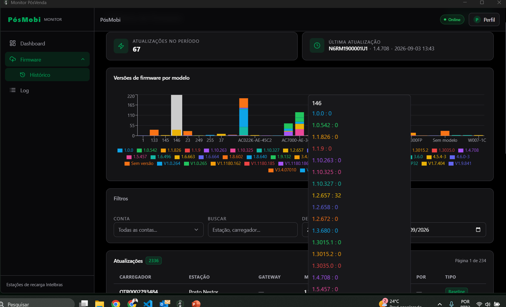
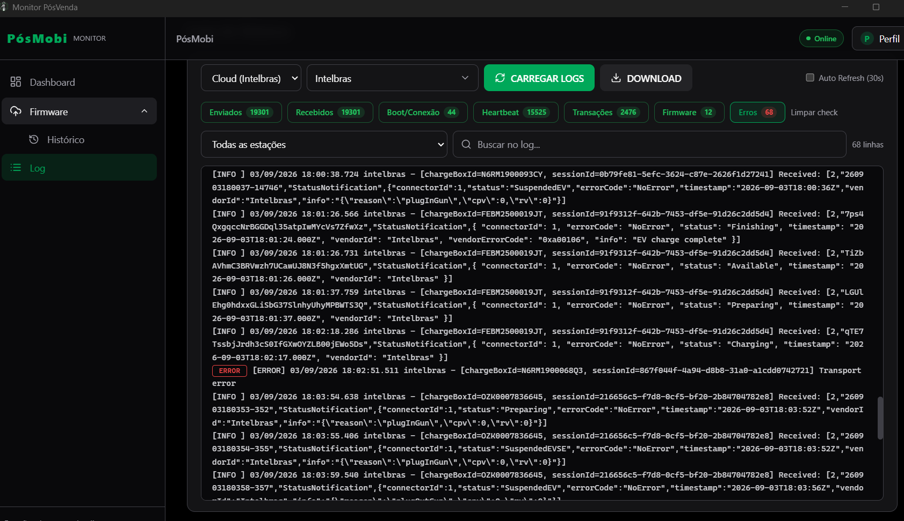

Manual da Plataforma PósMobi
Plataforma técnica de gestão de carregadores de veículos elétricos (mobility tools).
O PósMobi — Mobility Tools é uma plataforma técnica de gestão e operação de estações de recarga de veículos elétricos da Intelbras. Através de um único painel é possível acompanhar em tempo real o status dos carregadores, diagnosticar falhas, consultar os logs de comunicação (protocolo OCPP) e atualizar o firmware das estações de forma remota.
Módulos principais do sistema:
- Dashboard — visão geral dos carregadores cadastrados e seus indicadores.
- Firmware — upload/envio de novos firmwares para as estações e editor de links por modelo.
- Histórico — registro das atualizações de firmware realizadas.
- Log — diagnóstico técnico da comunicação entre a plataforma (CSMS) e as estações.
Este manual descreve para que serve cada botão, o significado de cada campo/coluna das telas e explica os status de atualização de firmware exibidos durante um envio.
1. Login
A tela de login é a porta de entrada do PósMobi. Cada usuário acessa a plataforma com as suas próprias credenciais (e-mail e senha). O acesso é individual: cada usuário enxerga as contas e estações às quais tem permissão.

| Campo / Botão | Para que serve |
|---|---|
| PósMobi / Mobility Tools | Identificação da plataforma (nome e subtítulo). |
| Digite o e-mail do usuário (ex.: seu.email@empresa.com). | |
| SENHA | Digite a senha do usuário. |
| CONECTAR | Botão que valida as credenciais e inicia a sessão na plataforma. |
| Conectado à internet | Indicador de conexão de rede do dispositivo (não é o estado do login). Verde = com internet; vermelho = sem internet; cinza = verificando. |
Observação: o indicador de conexão refere-se à rede local do computador. Mesmo com a internet ativa, o login só é concluído se as credenciais estiverem corretas e houver acesso à API da plataforma.
2. Dashboard
O Dashboard apresenta a visão geral da operação: indicadores (KPIs), distribuição dos carregadores por modelo e a tabela de carregadores com filtros.

Indicadores (KPIs)
| KPI | Significado |
|---|---|
| Carregadores ⚡ | Total de carregadores cadastrados (considerando a conta e os filtros aplicados). |
| Ativos 📶 | Carregadores marcados como ativos na operação. |
| Ocupados 🔌 | Carregadores em uso (sessão de carga em andamento). |
| Com falha ⚠️ | Carregadores com status de falha (Faulted). |
Botão ATUALIZAR e indicador de horário
No topo do dashboard há a informação "Atualizado: 14:55:07" e o botão ATUALIZAR (ícone de atualização ↻).
- Atualizado: horário (fuso de São Paulo) da última atualização dos dados na tela.
- ATUALIZAR: força o recarregamento dos carregadores diretamente da API. Durante o carregamento, o botão mostra ATUALIZANDO... com o ícone girando.
Gráfico "Carregadores por modelo"
Gráfico de barras que mostra quantos carregadores existem para cada modelo de equipamento (ex.:
ACOTIK-AE-25-ITB, ACOZZK-AE-45C2, AC7000, Sem modelo).
Clicar em cada barra/tooltip exibe o total daquele modelo. Os valores são recalculados conforme os filtros.
Filtros e limpar
Os filtros permitem refinar a lista de carregadores. O botão Limpar restaura todos os campos para o padrão ("Todos", campos em branco).
| Filtro | Como usar |
|---|---|
| Conta | Seletor de conta/tenant. Define qual conjunto de carregadores carregar ("Todas as contas..." = sem filtro). |
| ChargeBox ID | Campo de texto — busca pelo identificador da estação. |
| Descrição | Campo de texto — busca por nome/descrição da estação. |
| Modelo | Lista — seleciona um modelo específico. |
| Status | Lista — filtra por status da estação (Disponível, Ocupado, Preparando, Falha). |
| Online | Lista — filtra por Online / Atrasado / Offline. |
| Firmware | Campo de texto — busca por versão de firmware. |
| Cidade/UF | Campo de texto — busca por cidade/UF (ex.: São José/SC). |
| Ativo | Lista — Ativo / Inativo / Todos. |
3. Carregadores (tabela)
Os carregadores são listados em tabelas agrupadas por modelo (cada modelo tem seu bloco com o número de estações). Cada linha representa uma estação de recarga.

Colunas e seus significados
| Coluna | Significado |
|---|---|
| ChargeBox ID | Identificador único da estação (ex.: NKYMZIOOOI7FN). |
| Descrição | Nome de identificação da estação (ex.: "Lins e Silva's"). |
| Status Disponível | Estado atual do conector. Badges: Disponível Ocupado Preparando Falha. |
| Online 📶 | Ícone Wi-fi: Wifi = Online (heartbeat recente), Atrasado = sem heartbeat há alguns minutos, WifiOff = Offline (sem heartbeat há mais tempo). |
| Firmware | Versão de firmware atual instalada na estação (ex.: 1.6.663). |
| Cidade/UF | Localização da estação (ex.: Teresina/PI). |
| Último Heartbeat (SP) | Data/hora (fuso de São Paulo) da última comunicação "estou vivo" recebida da estação. |
| Ativo | Ativo = estação habilitada na operação; Inativo = desabilitada. |
Ícone de olho (👁): aparece ao lado do status quando a estação está com falha. Clique para abrir uma janela com os logs da estação e visualizar o diagnóstico da falha.
Modal "Escolher firmware" (por estação)

Este modal é aberto ao iniciar uma atualização de uma estação disponível. Ele mostra:
- Estação: o ChargeBox ID e a descrição (ex.: NKYMZIOOOI7FN — Lins e Silva's).
- Modelo: o modelo do equipamento (ex.:
AC7000-AE-25(1)). - Tipo de arquivo de firmware: Gateway (.bin) MCU (.hex) Completa (.enfs).
A escolha do tipo define qual link de firmware (configurado no editor de links) será enviado.
4. Upload de Firmware
A tela Upload de Firmware permite enviar remotamente uma nova versão de firmware para
uma ou várias estações ao mesmo tempo, seguindo o protocolo OCPP (UpdateFirmware).

Como funciona
- Filtre ou localize os carregadores desejados (mesmos filtros do Dashboard).
- Marque a checkbox de cada carregador, ou use Selecionar todos / Desmarcar todos.
- Escolha o tipo de firmware a enviar (Gateway, MCU ou Completa).
- O sistema envia o comando usando o link configurado para o modelo no Editor de Links.
- O monitoramento automático acompanha a atualização até a conclusão (veja Status de FW).
Botões principais
| Botão / Elemento | Para que serve |
|---|---|
| ATUALIZAR (↻) | Recarrega a lista de carregadores da API. |
| Editar URL (✏️) | Abre o Editor de Links — onde são configuradas as URLs e versões de firmware de cada modelo. |
| Selecionar todos / Desmarcar todos | Marca ou desmarca todos os carregadores da lista filtrada de uma vez. |
| Coluna Status FW | Mostra o estado do envio daquele carregador (Baixando, Baixado, Instalando, Instalado...). |
| Gateway (.bin) | Botão de envio — envia o firmware do gateway (arquivo .bin). |
| MCU (.hex) | Botão de envio — envia o firmware do MCU (arquivo .hex). |
| Completa (.enfs) | Botão de envio — envia o pacote completo (arquivo .enfs). |
| N selecionado(s) | Contador de quantos carregadores estão marcados no momento. |
Aviso: cada botão envia o link do tipo selecionado configurado no editor de links para o modelo da estação. Carregadores cujo modelo não possui link configurado para o tipo escolhido são ignorados (com aviso).
Tipos de firmware
| Tipo | Extensão | Descrição |
|---|---|---|
| Gateway | .bin | Firmware do módulo de comunicação/gateway da estação. |
| MCU | .hex | Firmware do microcontrolador principal da estação. |
| Completa | .enfs | Pacote completo de firmware da estação. |
5. Editor de Links (Firmware por Carregador)
O Editor de Links (aberto pelo botão Editar URL) é onde o técnico cadastra, para cada modelo de carregador, a URL e a versão dos arquivos de firmware. É a partir dessas configurações que o envio no Upload de Firmware escolhe qual arquivo baixar.

Elementos do editor
| Botão / Campo | Para que serve |
|---|---|
| Novo carregador (＋) | Adiciona uma nova linha em branco para cadastrar um novo modelo/carregador. |
| Carregador / Modelo | Nome de referência do bloco (ex.: Business 22kW, City Pro 7.4, 11kW). |
| Gateway (.bin) — URL / Versão | URL do arquivo .bin e sua versão (ex.: V43.0.074). |
| MCU (.hex) — URL / Versão | URL do arquivo .hex e sua versão (ex.: V1.10.325). |
| Completa (.enfs) — URL / Versão | URL do arquivo .enfs e sua versão (ex.: V1.10.225). |
| 🗑️ (excluir) | Remove a linha do carregador/modelo. |
| Vincular modelos | Cada modelo real da plataforma é vinculado a um bloco de carregador. Todas as estações do modelo usarão as URLs daquele bloco. |
| Salvar | Salva as URLs/versões e vínculos configurados. |
| Cancelar | Descarta as alterações e fecha o editor. |
Atenção: cada modelo só pode ser vinculado a um bloco de carregador. Se dois modelos diferentes aparecerem com a mesma configuração, verifique o vínculo no editor.
6. Status de Atualização de Firmware
Durante um envio de firmware, a coluna Status FW apresenta o estado da atualização de
cada estação em tempo real, baseado nas mensagens FirmwareStatusNotification recebidas da
estação via OCPP.
Tabela de status
| Status (sistema) | Exibido para o usuário | Significado | Cor |
|---|---|---|---|
Downloading |
Baixando | A estação está baixando o arquivo de firmware da URL informada. | Amarelo (em andamento) |
Downloaded |
Baixado | O download do arquivo foi concluído com sucesso na estação. | Verde-azulado (concluído na etapa) |
Installing |
Instalando | A estação está instalando/gravando o firmware. | Amarelo (em andamento) |
Installed |
Instalado | A instalação foi concluída com sucesso. Atualização finalizada. | Verde (sucesso) |
DownloadFailed |
Falha no download | A estação não conseguiu baixar o arquivo (URL inválida, rede, servidor indisponível). | Vermelho (erro) |
InstallationFailed |
Falha na instalação | A estação não conseguiu instalar o firmware baixado. | Vermelho (erro) |
Idle |
Ocioso | Sem atualização em andamento (estação em estado normal/parado). | Cinza (parado) |
Fluxo típico de uma atualização bem-sucedida
Downloading
→
Baixado Downloaded
→
Instalando Installing
→
Instalado Installed
Fluxo com falha (exemplos)
DownloadFailed
InstallationFailed
Monitoramento automático
Após o envio, a plataforma entra em modo "Monitorando atualizações..." (ícone pulsante).
Ela relê os logs da conta a cada poucos segundos, registra a sequência de status (ex.:
Baixando › Baixado › Instalando › Instalado) e mostra a versão nova na coluna
Firmware. Ao concluir (status final Installed, ou erro final), o
monitoramento encerra e a lista de versões é atualizada.
Status considerados "finais" (encerram o monitoramento)
- Installed (instalado — sucesso)
- DownloadFailed (falha no download)
- InstallationFailed (falha na instalação)
- Idle (ocioso)
7. Histórico
A tela Histórico registra as atualizações de firmware executadas, com totais por período e distribuição das versões por modelo de carregador.

Elementos
| Elemento | Significado |
|---|---|
| ATUALIZAÇÕES NO PERÍODO | Número total de atualizações registradas no período selecionado (ex.: 67). |
| ÚLTIMA ATUALIZAÇÃO | Detalhe da atualização mais recente: estação (ChargeBox ID), versão (ex.: 1.4.708) e data/hora. |
| Versões de firmware por modelo | Tabela/gráfico mostrando, para cada modelo, quantas estações usam cada versão de firmware. |
| Contagens por versão | Números (ex.: 1.0.0 : 0, 1.6.663 : 145) indicando quantas estações estão em cada versão. |
Dica: use os filtros de período e de modelo para analisar a cobertura de versões e identificar carregadores que ainda precisam de atualização.
8. Log do Sistema
A tela Log é a ferramenta de diagnóstico técnico. Ela exibe, em tempo real, a comunicação entre a plataforma (CSMS) e as estações de recarga usando o protocolo OCPP.

Botões e controles
| Botão / Controle | Para que serve |
|---|---|
| Cloud (Intelbras) | Fonte dos logs — a nuvem/CSMS da Intelbras (única fonte disponível na versão atual). |
| Selecionar conta | Escolhe a conta/tenant cujos logs serão exibidos. |
| CARREGAR LOGS | Carrega (busca) as linhas de log da fonte/conta selecionada. |
| DOWNLOAD | Baixa o log atual em um arquivo de texto (.txt) para análise offline. |
| Auto Refresh (30s) | Ativa a atualização automática dos logs a cada 30 segundos. |
| Todas as estações | Filtra as linhas por uma estação específica (ou mostra todas). |
| Buscar no log... | Pesquisa texto dentro das linhas exibidas. |
| Limpar check | Remove o filtro de categoria ativo, voltando a mostrar todas as categorias. |
Categorias de log
As categorias funcionam como filtros rápidos. Cada uma conta quantas linhas correspondem, e o usuário clica em uma para ver apenas aquele tipo de mensagem.
| Categoria | Significado |
|---|---|
| Enviados | Comandos enviados pela plataforma (CSMS → estação), ex.: RemoteStartTransaction, Reset, UpdateFirmware, ChangeAvailability. |
| Recebidos | Mensagens recebidas da estação (estação → CSMS), ex.: BootNotification, Heartbeat, StatusNotification, MeterValues. |
| Boot/Conexão | Eventos de conexão e inicialização (BootNotification) da estação. |
| Heartbeat | Heartbeats recebidos — indicam que a estação está viva. |
| Transações | Início e fim de sessões de carregamento (StartTransaction/StopTransaction). |
| Firmware | Atualizações e status de firmware (UpdateFirmware, FirmwareStatusNotification). |
| Erros | Erros e falhas (ex.: Faulted, errorCode, PowerMeterFailure). Categoria destacada em vermelho quando há ocorrências. |
Entendendo as linhas de log
Cada linha do log pode conter os seguintes elementos:
- Nível:
[INFO],[WARN]ou[ERROR]— gravidade da mensagem. - Data/hora: instante da mensagem (fuso São Paulo).
- Conta/estação: tenant e
chargeBoxIdrelacionados. - Direção:
Sending(plataforma → estação) ouReceived(estação → plataforma). - Mensagem OCPP: o JSON do comando/notificação (ex.:
StatusNotificationcom statusSuspendedEV,Finishing).
Uso técnico: o log é uma ferramenta de suporte. Ao abrir um chamado, as informações de
erros (ERROR) e mensagens Faulted ajudam a identificar a causa da falha de uma
estação.
Fim do manual. Documentação gerada para a plataforma PósMobi — Mobility Tools · Estações de recarga Intelbras.